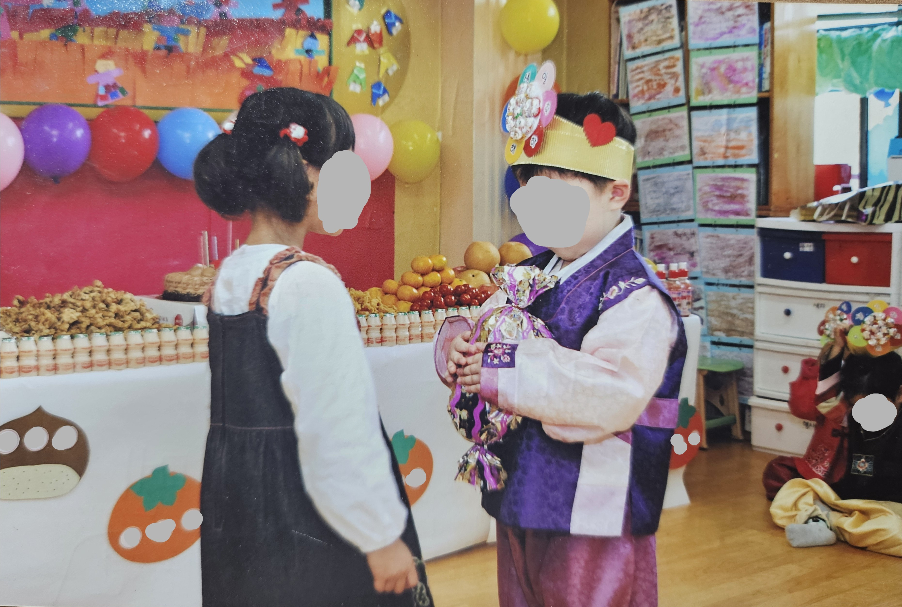
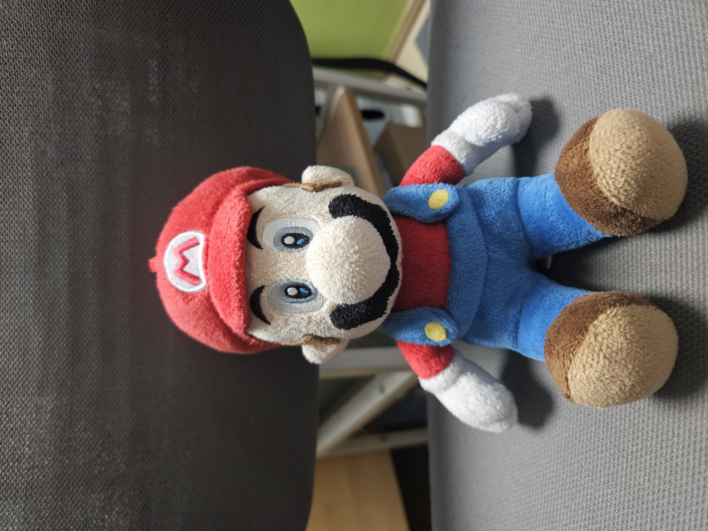
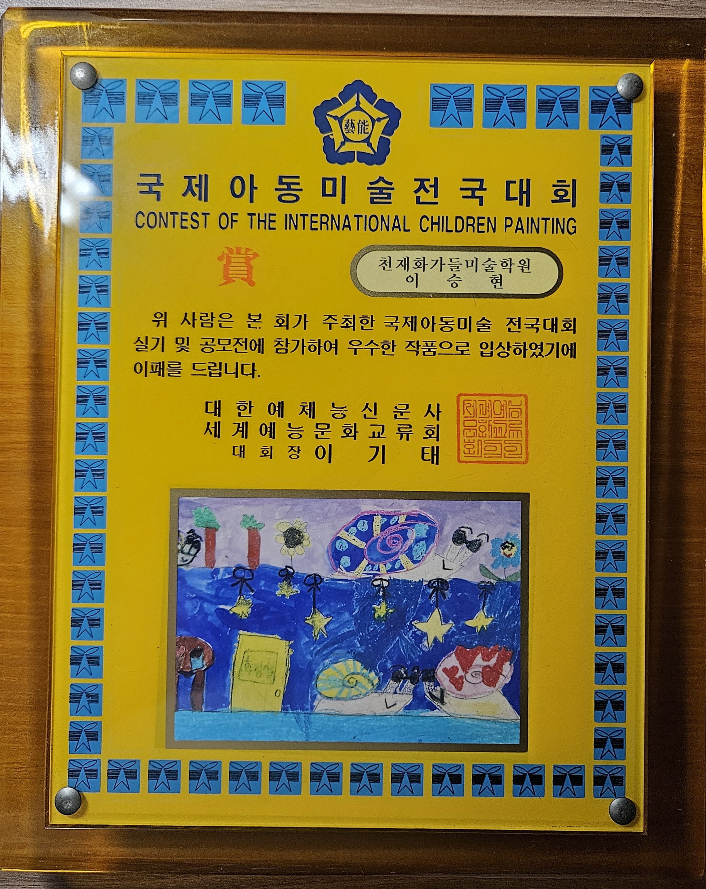

유년기

2007년 쯤 어린이집에서 내 생일을 축하해주셨다.
주요 연표
-
2005~2007년: 고양시 중산동 소재
XXX 어린이집에 다님.
-
2009년: 같은 동의 XX초등학교에
입학함.
- 2010년: 파워레인저를 처음으로 접함.
- 2012년: 아동 미술 대회에 참가함.
일본산(?) 죽돌이

엄마께서 사주신 마리오 인형
이 시기엔 일본 것들을 많이 접했었다.
닌텐도 DS로 마리오 파티를 하며 들은 캐릭터가
코인 먹는 소리, 파워레인저 정글포스 속
화려한 액션들은 아직도 생생하다. 특히
정글포스에선 실수로 민들레를 밟은 누나가 미안하다며
다시 펴주는 장면이 있는데, 이걸 본 후론
걸어갈 때마다 잡초도 피하며 걷는다.
성인 돼서 다시 보니, 내가 향수병이 심한
걸 깨달았다.
미술 대회 썰

미술 학원에 다닐 때, 선생님께서 대회에 낼 그림을 그리라고 하셨다.
집 오면 손 씻자마자 티비 틀 정도로 스폰지밥을
좋아했던지라 이걸 그리고 싶었는데, 그 땐 스폰지밥 그리기가
고난이도(...)였다.
그래서 핑핑이로 정했는데, 얘만 있으면 심심하니 다른 달팽이들도
그렸다.
눈 못 그려서 다 선글라스로 만든 건 안 비밀.
배경은 물론 비키니 시티.